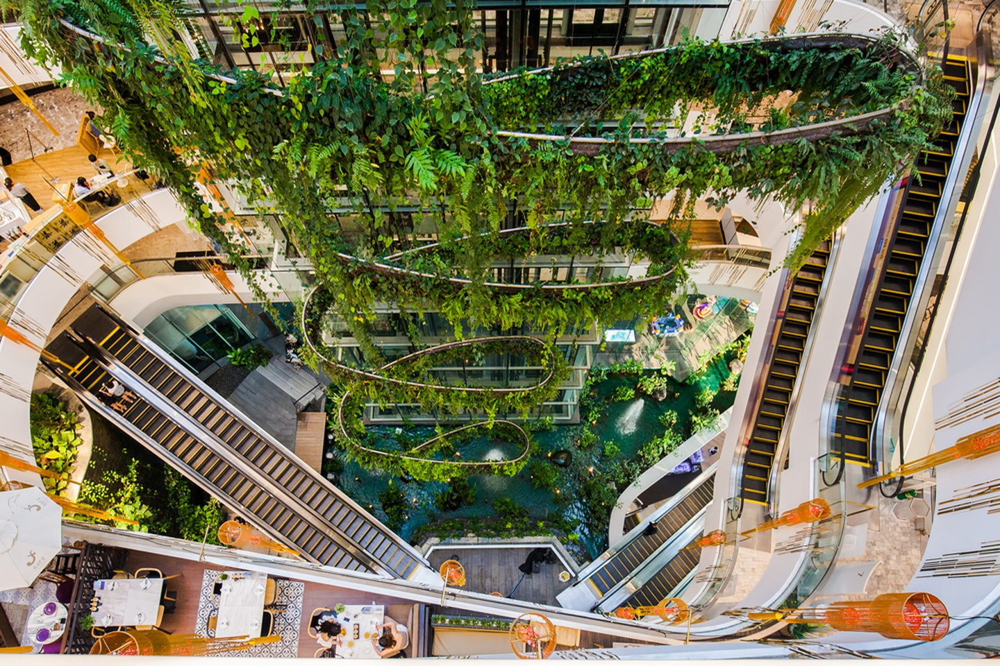
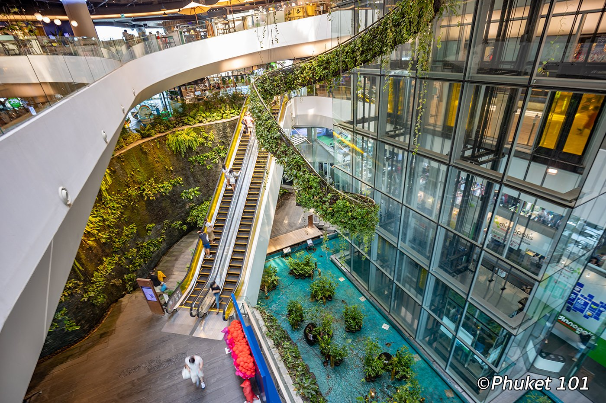
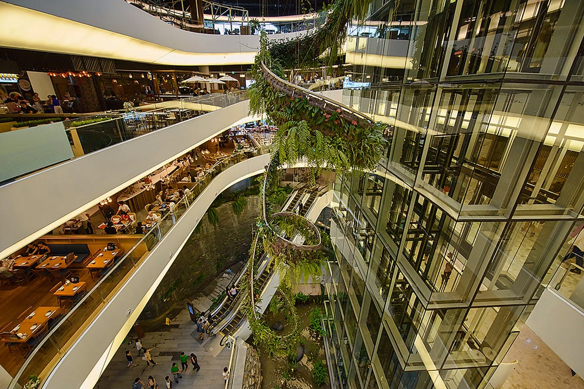

Pine City Mall, Cape Town’s largest shopping centre, is conveniently located on the N1, central to the CBD and surrounding suburbs. The centre has a wide selection of stores and thousands of the best local and international brands to choose from. Visit Pine City Mall for the best fashion, retail, leisure and entertainment for the whole family, all under one roof.
While exploring Pine City Mall, you’ll find a variety of eateries, from sit-down restaurants, cafés, and coffee shops, to takeaway outlets where you can either take a seat in our spacious Food Court or grab a bite on the go. These eateries vary across cuisines and there are both Halaal and vegetarian options.
If you are looking for the ultimate movie experience, then Nu Metro Canal Walk is where you want to book your next movie. The Scene Xtreme cinema boasts the biggest 3-storey-high screen in Cape Town, 4K ultra-high-definition projection and 360-degree sound to fully immerse yourself in the movie experience. If comfort and luxury is what you are looking for, then visit one of Nu Metro’s Scene VIP cinemas. It includes an exclusive VIP lounge and bar, fully reclinable plush spacious seating and service to your seat.
The Pine City Mall shopping experience encompasses variety, convenience, entertainment, and leisure with easy access directly off the N1. There are more than 8000 parking bays both undercover and on rooftop levels with 12 conveniently located entrances into the centre.
  